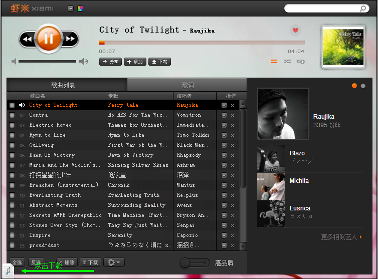

声海盗-下载在线音乐的Chrome插件
支持豆瓣FM，豆瓣音乐人，虾米，Songtaste，落网，人人电台，QQ音乐，网易云音乐，新浪乐库，搜狗音乐等.
安装和使用
- 升级你的chrome或其他chrome核浏览器(已知支持枫树浏览器，360急速浏览器最新版)，已知支持chrome内核24+版本
- 安装此插件(Chrome WebStore链接)
- 打开在线音乐网页，播放音乐
- 音乐成功播放后，左下角/右下角会出现下载链接，点击下载
附上各网站比特率
豆瓣FM <=64kbps, 豆瓣音乐人 >=160kbps, 虾米 128kbps, songtaste 128kbps, 落网 128kbps, 人人电台 96kbps, QQ音乐 128kbps, 网易云音乐 160kbps, 新浪乐库 128kbps, 搜狗音乐 128kbps.
报告bug，提建议，吐槽: 微博@德先生在哪-simon-李实. 